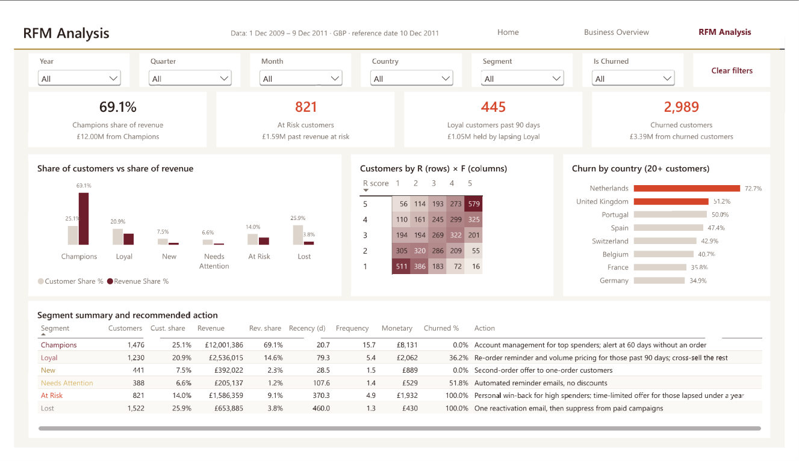
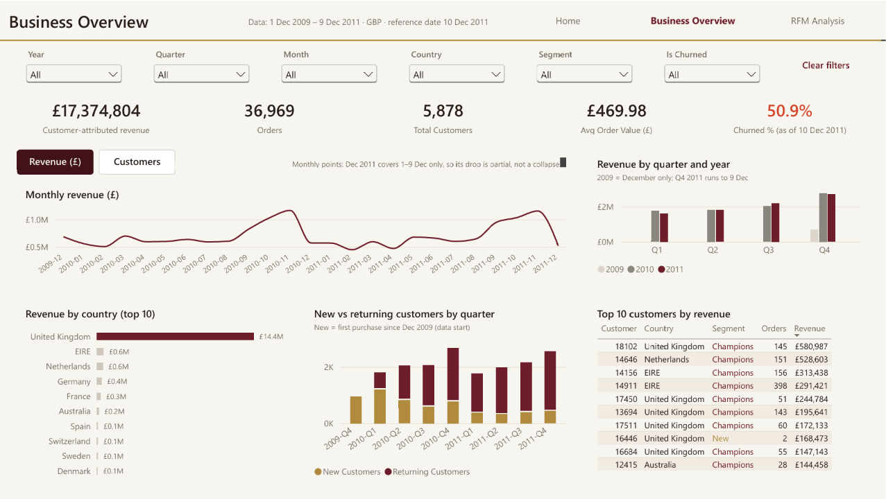
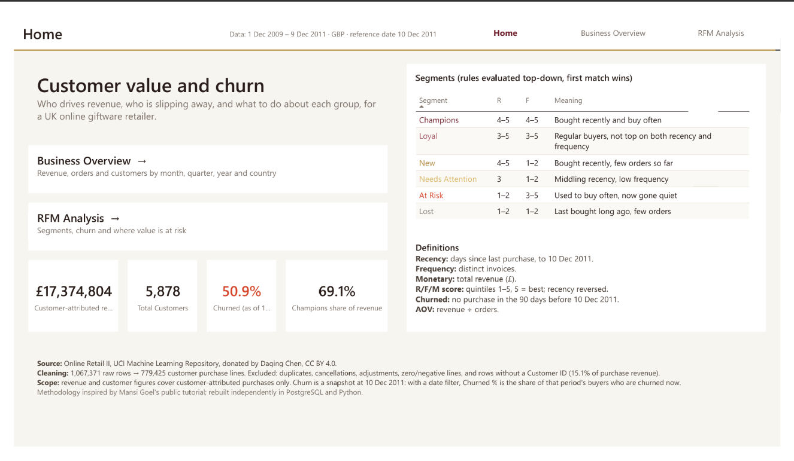

RFM segmentation of 5,878 customers and £17.4M of revenue from a UK online giftware retailer (Dec 2009 – Dec 2011): where value is concentrated, which customers are lapsing, and the recommended action for each segment.
£17.37MCustomer-attributed revenue
5,878Customers, 36,969 orders
69.1%Of revenue from Champions (25.1% of customers)
50.9%Of customers churned as of 10 Dec 2011
Ask the dashboard
Pick one of the five business questions. Each answer uses figures verified against the SQL and Python outputs, and shows the dashboard page it comes from.
A quarter of customers bring in over two thirds of revenue.
1,476 Champions (25.1% of customers) generate £12,001,386.40, or 69.1% of revenue.
They average 15.68 orders and £8,131.02 each, and last bought 20.69 days before the reference date.
Concentration: the top 1% of customers bring in 32.0% of revenue, the top 10% 64.0%.
Overseas orders are twice the size of UK orders: £870.94 vs £429.00 AOV.
Dashboard: RFM Analysis → share of customers vs share of revenue.

Half the customer base is churned; the recoverable value sits in two groups.
2,989 of 5,878 customers (50.9%) made no purchase in the 90 days before 10 Dec 2011. They account for £3,391,383.66 of past revenue.
At Risk:821 former frequent buyers (£1,586,359.12). 97 of them are top-quintile spenders holding £832,906.23.
Loyal, just lapsed:445 Loyal customers (£1,051,620.05) are 92–190 days past their last order: the earliest and most recoverable warning.
Dashboard: RFM Analysis → KPI panels and segment table; Segment slicer → At Risk.
Revenue is flat year on year, with a strong Q4 peak.
Like for like (Jan–Nov): £7,804,073.36 in 2010 vs £7,799,595.72 in 2011, a change of −0.1%.
November is the peak in both years: £1,166,460.02 (2010) and £1,156,205.61 (2011).
Returning customers make up 78.9–83.7% of active customers in every 2011 quarter, while new customers per Q4 fell from 778 to 440. Part of this shift comes from the data window, which starts in Dec 2009.
Dashboard: Business Overview → monthly trend (Revenue / Customers toggle), quarter comparison, new vs returning.

The UK dominates; the overseas risk is concentration, not churn.
The UK holds 82.8% of revenue and 91.0% of customers, with 51.2% churn against 47.7% for non-UK customers.
Germany (34.9%) and France (35.8%) have the lowest churn among countries with 20+ customers.
The Netherlands has the highest churn rate (72.7%), but its 16 churned customers held only £15,817.50; the 6 active Dutch accounts hold £538,220.59.
Dashboard: Business Overview → revenue by country; RFM Analysis → churn by country.
One sized action per segment.
Segment
Customers · revenue held
Action
Champions
1,476 · £12,001,386.40
Account management for the 833 with top spend (£10,908,425.05); alert when any Champion passes 60 days without an order.
Loyal
1,230 · £2,536,015.29
Re-order reminder and volume pricing for the 445 past 90 days (£1,051,620.05); cross-sell to the 785 active.
New
441 · £392,021.57
Second-order offer to the 237 with exactly one order (£80,505.44).
Needs Attention
388 · £205,137.22
Automated reminder emails only; 201 already churned, £528.70 average, so no discounts.
At Risk
821 · £1,586,359.12
Personal win-back for the 97 top spenders (£832,906.23) first; time-limited offer for the 368 lapsed within a year (£784,634.10).
Lost
1,522 · £653,884.67
One reactivation email, then remove non-responders from paid campaigns.
Dashboard: RFM Analysis → segment summary and recommended action.
The dashboard
Three pages in Power BI Desktop, with six synced slicers, a revenue/customers toggle, cross-filtering and tooltips. The report is stored as a Power BI Project, so the model and every visual are text files in the repository.

Home. Headline numbers, the segment rule table and definitions.Business Overview. Revenue, orders and customers by month, quarter, year and country; new vs returning; top customers.RFM Analysis. Value concentration, the R×F grid, churn by country and the action for each segment.
How it was built
Every figure is reconciled from one stage to the next, and the dashboard's measures were checked against the SQL and notebook outputs.
Load
1,067,371 raw rows into PostgreSQL 16 with COPY; the load fails if the count is wrong.
Clean
Duplicates, cancellations, adjustments and zero-value lines removed in logged steps: 779,425 customer purchase lines remain.
Segment
Python scores Recency, Frequency and Monetary in quintiles, assigns six segments from an R×F rule table and flags 90-day churn.
Present
Power BI star schema with 29 DAX measures; three pages generated as code from a Power BI Project.
What it covers
Completed purchases by identified customers, 1 Dec 2009 – 9 Dec 2011, in GBP.
Recency and churn measured at 10 Dec 2011, the day after the last invoice.
Segments from R and F scores; M is reported per segment and follows the segments (Champions average M 4.42, Lost 1.70).
What it won't tell you
Revenue without a Customer ID (15.1%, £3,090,394.12) is excluded.
Cancellations are excluded, not netted; one 80,995-unit line (£168,469.60) lifts 2011 order value.
Churn is a 90-day snapshot, not a prediction; there is no forecasting model.
2009 is December only and 2011 ends on 9 Dec; comparisons use Jan–Nov.
Explore it
The repository has the SQL, the notebook, the findings and the Power BI Project.